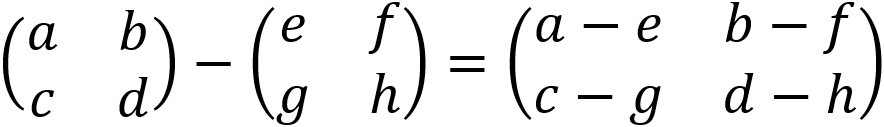
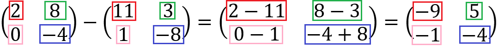

OPERASI MATRIKS
Pengurangan Matriks
Dalam pengurangan matriks, elemen-elemen yang seletak dapat dikurangkan.
Bagaimana cara menguranginya? Coba lihat contoh ini ya!
Ordo kedua matriks sudah sama, yaitu 2×2, sehingga pengurangan matriks bisa kita kerjakan. Perhatikan kotak yang ditandai dengan warna yang beda-beda. Karna elemen yang seletak bisa dikurangkan, jadi kita bisa kurangin aja deh. Coba kita lihat elemen baris pertama dan kolom pertama dari kedua matriks tersebut. Karna udah seletak, bisa langsung dikurangkan, yaitu 2 - 11 menghasilkan -9. Maka, di hasil pengurangan matriks, elemen baris pertama dan kolom pertama bernilai -9; elemen baris pertama dan kolom kedua bernilai 5; elemen baris kedua dan kolom pertama bernilai -1; dan elemen baris kedua dan kolom kedua bernilai -4.
Note: Jangan lupa untuk perhatikan tanda plus minusnya ya dalam pengerjaannya!